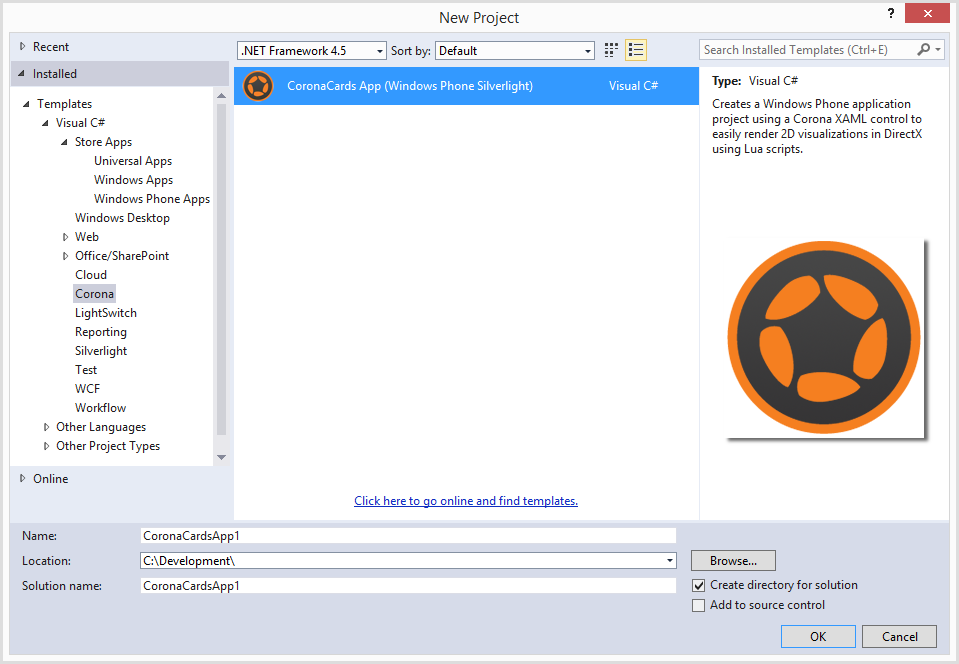

CoronaCards — Windows Phone 8
Creating a CoronaCards App
This guide illustrates how to create a new application project with the Corona Framework already selected as an SDK reference, a simple “Hello World” Corona project added within the Assets\Corona folder, and a CoronaPanel XAML control added to the MainPage configured for fast rendering to a DrawingSurfaceBackgroundGrid. By default, CoronaCards for Windows Phone 8 expects to find a main.lua file under the
- Open Visual Studio.
- From the upper menu bar, select FILE → New → Project.
- Select Installed → Templates → Visual C# → Corona from the left sidebar. Alternatively, you can create a VB.NET project under the Visual Basic templates section.
- In the central pane, select CoronaCards App (Windows Phone Silverlight) from the list.
- In the lower pane, fill in the Name field, browse to a Location, and specify the Solution name.
- Click the OK button to create the app project.
